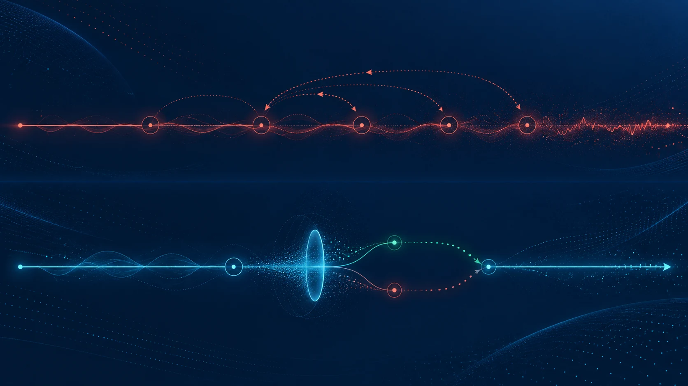

Automate work · Powered by ALEBEX AI
Stop losing time to calls, follow-ups, and repetitive admin.
ALEBEX AI helps businesses handle routine calls, reminders, bookings, follow-ups, intake, and customer communication, so your team can focus on higher-value work while customers still get fast, consistent service.
Plain-language automation for service and communication.
- Voice calls and conversational workflows
- Lead follow-up and qualification
- Appointment booking and reminders
- Customer service routing
- Multilingual communication support
- Workflow escalation to human staff
Voice only works when it feels human-speed.
In conversation, awkward silence is product failure, latency breaks trust, causes interruptions, and makes AI feel robotic. ALEBEX AI runs a dual-model architecture with a single voice: a small language model starts speaking early while a larger model completes the full response.
The fastest hallucination is still a hallucination.
Every sentence is checked against off-policy regions of latent space before it becomes audio — verdict in under 50 milliseconds, alongside synthesis rather than in front of it.
Other agentic systems don't put explicit anti-hallucination in the pipeline, they rely on the prompt whereas Alebex has a dedicated validation layer.

A second model reviews in series
- 01User query
- 02Generate
- 03Reflect / CheckRepeat if needed
- 04Final answer
- Higher latency
Repeated review cycles add latency — ~600ms per round.
Latent-space check, under 50 ms
- 01User input
- 02AI response draft
- 03SLM validation ~20ms
- PASS — speaksFAIL — blocks, redirects, or regenerates
- 04Delivered response
- Low latency
The check runs alongside synthesis — the caller-facing path never waits.
Designed to augment staff, not replace accountability.
Every ALEBEX AI implementation includes governance safeguards:
- AI disclosure to callers and users
- Privacy review and approved knowledge sources
- Human escalation for sensitive matters
- Call-handling controls
- Monitoring, audit, and ongoing optimization
ALEBEX AI for education and for SMEs.
ALEBEX AI for Education
Admissions triage, application checklists, appointment booking, payment reminders, FAQ routing, after-hours and multilingual support, with human escalation for sensitive cases.
ALEBEX AI for SMEs
Customer service, sales follow-up, appointment booking, and administrative communication for high-volume service businesses.